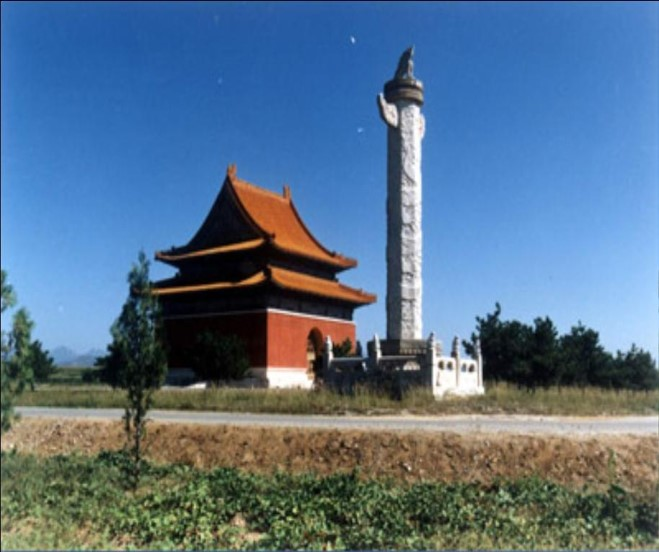
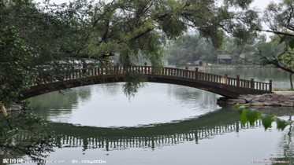

2020年第四届“华夏文化，有冀可寻”河北地域特色文化线上展览|皇家文化篇
中国传统文化可分为三个层次：皇帝文化、士大夫文化、民间文化。占统治地位的是皇帝文化，即皇家文化。皇家宫廷禁苑、府邸寺庙建设绵延不绝,由此带来的皇家的礼仪、宫廷的典制、内廷的生活习惯乃至宫室的建筑等，构成了皇家文化的主体。在园林建筑方面，形成了以皇家园林庙宇、王府为代表的象征皇权的最高规格的建筑。北海、景山、恭亲王府、醇亲王府等建筑不仅文化内涵深刻，还表现出大气磅礴、深邃高雅的皇家建筑园林文化特征。
最古老的皇家园林—首都北海公园
北海公园的建设源于一个古老的神话：据说，浩翰的东海上有三座仙山， 叫做蓬莱、瀛洲、方丈；山上住着长生 不死的神仙。秦始皇统一中国后，派方士徐福前往东海寻找不死药，可一无所获。到了汉朝，汉武帝也做起了长生不 死之梦，可寻找仍然没有结果，于是下令在长安北面挖了一个大水池，名“太液池”，池中堆起三座假山，分别以蓬 莱、濒洲、方丈三仙山命名。
自此以后，历代皇帝都喜欢仿效"一池三山"的形式来建造皇家宫苑。北海采取的正是这种形式--北海象征"太液池"，"琼华岛"是蓬莱，原在水中的"团城"和"犀山台"则象征瀛洲和方丈。园中有"吕公洞"、"仙人庵"、"铜仙承露盘"等许多求仙的遗迹。北海公园， 位于北京市中心区，城内景山西侧，在故宫的西北面，与中海、南海合称三海。属于中国古代皇家园林。
全园以北海为中心，面积约71公顷，水面583市亩，陆地占480市亩。这里原是辽、金、元建离宫，明、清辟为帝 王御苑，是中国现存最古老、最完整、最具综合性和代表性的皇家园林之一，1925年开放为公园。是中国保留下来的最悠久最完整的皇家园林，为全国重点文物保护单位。国家AAAA级旅游景区。
经查资料得知：静心斋原名镜清斋。是清乾隆二十二年（1757年）所建，占地面积4700平方米，是皇太子的书斋，它以叠 石为主景，周围配以各种建筑，亭榭楼阁，小桥流水，叠石岩洞，幽雅宁静，布局巧妙，体现了我国北方庭院园林艺术的精华，是一座建筑别致、风格独特的“园中之园”。
镜清斋是整个静心斋园林景区的主体建筑。此主殿建筑面阔五间，前廊后 轩，四周抄手游廊环抱方池，体现了其以池水为主题的布局立意。此殿端庄素雅，乾隆更写下“临池构屋如临 镜”的诗句来描述它。殿外“镜清斋”三字隶书匾额为民国初年陆徵祥所书。

沁泉廊，以山池景为核心，是园中的重要的景观。这里山池婉转，横峰侧岭，空间穿透，南北另有一番风景，为整个静心斋 增添了无穷的美观。 是夏季避暑清凉舒适 之地。
抱素书屋曾是清代皇帝的读书之所。“抱素”援引《汉书·礼乐志》：“易乱除邪，革正异俗，兆民反本，抱素怀朴。”表现了百姓在国家安定兴盛时，保持纯朴的本质而安居乐业的景况，这也正是乾隆所憧憬的理想统治。
清东陵
清东陵于1661年(顺治十八年)开始修建，历时247年，陆续建成217座宫殿牌楼，组成大小15座陵园。陵区南北长125公里、宽20公里，埋葬着5位皇帝、15位皇后、136位妃嫔、3位阿哥、2位公主共161人。是中国现存规模最宏大、体系最完整、布局最得体的帝王陵墓建筑群。
孝陵
按照封建社会的礼制观念，居中为大为尊，因而，对于陵寝这一礼制性极强的建筑来说，就更加注重于构图的严密性。所以清东陵的结构设计便突出了中轴线的作用。
孝陵的建筑，北自昌瑞山，南达金星山，其间6000余米，将清东陵全部建筑扼控起来。
其建筑自南而北依次为:石牌坊、下马碑、大红门、风水墙、具服殿、神功圣德碑亭、华表、石望柱、石像生、龙凤门、一孔桥、乇孔桥、五孔桥、下马碑、三孔桥、神道碑亭、神厨库、东西朝房、左右班房、隆恩门、东西燎炉、东西配殿、隆恩殿、石平桥、琉璃花门、二柱门、台五供、石平桥、方城明楼、宝城宝顶和地宫。这一系列建筑高低错落，多姿多彩，使人目不暇接。
（一）石牌坊
•五间六柱十一楼的石牌坊，高13米，宽32米，
是清东陵陵区的标志物，有300多年的历史。
•孝陵的第一座建筑，标志着陵区的开始。
（二）大红门
•大红门面阔38米，进深11.15米,这座宏伟的建筑早年被毁.1979年,东陵管理机构筹资对其进行了修复.
•它位于石牌坊北半里许，它不仅是孝陵的大门，也是整个孝区的总门户。其建筑形式为单檐庑殿顶。共有3个拱券式门洞，两侧有便门两个。整个陵区的风水围墙是从大红门两侧开始的。
全长40余华里，期间高有便门6个。
(三)神道与具服殿
•进入大红门,是一条长达5600多米、宽12米，用砖石铺成的神道。
•又名更衣殿，在大红门以北东侧。它是长方形小院，南、北、东三面无门，西面有3个门。座东朝西，单檐歇山式建筑。
•谒陵者都要在此更换衣帽，或朝服、或常服、或缟素。
（四）神功圣德碑楼

•俗称大碑楼，高30米，在大红门以北的陵寝中轴线上，其建筑形式为重檐歇山顶，黄色琉璃瓦覆顶，四周有华表四根。
•楼内的石碑上，雕刻有嗣皇帝亲自撰写的碑文，是为已故皇帝歌功颂德用的。
（五）石像生
•孝陵石像生共有18对，其中狮子、狻猊、骆驼、大象、麒麟、马各两对，一立一卧，武将文臣各三对。
•神道两边的石像生栩栩如生，保存得非常完好，让人惊奇。三百多年来，它们始终站立于此，虽历经世事沧桑，仍忠心耿耿地看守着主人的陵墓。每座石像都用整块青白石雕成，古朴粗犷，它们与苍松翠柏相映，使神道更显庄严、肃穆之气势
(六)龙凤门
•起着收拢视线，突出石像生的作用，采用了六柱三门四壁的形式。
•传说它是按神话中的南天门修建，皇帝之灵经过此门即可进入天堂。
世界文化遗产： 承德避暑山庄
承德避暑山庄，中国古代帝王宫苑，清代皇帝避暑和处理政务的场所。位于河北省承德市北部。始建于一七零三年，历经清康熙、雍正、乾隆三朝，耗时八十九年建成。与全国重点文物保护单位颐和园、拙政园、留园并称为中国四大名园。一九九四年十二月，被列入世界文化遗产名录。二零零七年五月八日，经国家旅游局正式批准为国家5A级旅游景区。
世界遗产委员会评价：承德避暑山庄，是清王朝的夏季行宫，位于河北省境内，修建于公元1703年到1792年。它是由众多的宫殿以及其它处理政务、举行仪式的建筑构成的一个庞大的建筑群。建筑风格各异的庙宇和皇家园林同周围的湖泊、牧场和森林巧妙地融为一体。避暑山庄不仅具有极高的美学研究价值，而且还保留着中国封建社会发展末期的罕见的历史遗迹。
避暑山庄及周围寺庙是中国现存最大的古代帝王范囿和皇家寺庙群。最大的特色是它园中有山，山中有园。避暑山庄在总体规划布局和园林建筑设计上都充分利用了原有的自然山水的景观特点和有利条件，吸取唐、宋、明历代造园的优秀传统和江南园林的创作经验，加以综合、提高，把园林艺术与技术水准推向了空前的高度，成为中国古典园林的最高典范。避暑山庄借助自然和野趣的风景，形成了东南湖区、西北山区和东北草原的布局。宫殿区建于南端，是皇帝行使极力、居住、读书和娱乐的场所。避暑山庄这座清帝的夏宫，以多种传统手法，营造了120多组建筑，融汇了江南水乡和北方草原的特色，成为中国皇家园林艺术荟萃的典范。
帝王苑囿与皇家寺庙建筑经验的结晶。它成为与私园并称的中国两大园林体系中帝王宫范体系中的典范之作。园林建造实现了“宫”与“苑”形式上的完美结合和“理朝听政”与“游息娱乐”功能上的高度统一。寺庙建筑具有鲜明的政治功用。在造园上，它继承和发展了中国古典园林“以人为之美入自然，符合自然而又超越自然”的传统造园思想。
建筑技艺，撷取中国南北名园名寺的精华，仿中有创，表达了“移天缩地在君怀”的建筑主题。它囊括了亭台阁寺等中国古代大部分建筑形象。展示了中国古代木架结构建筑的高超技艺，并实现了木架结构与砖石结构、汉式建筑形式与少数民族建筑形式的完美结合。避暑山庄周围寺庙的建筑风格使汉、藏文化艺术融于一体，寺庙殿堂中，完好地保存和供奉着精美的佛象、法器等近万件，共同构成了十八世纪中国古代建筑富于融合性和创造性的杰作。避暑山庄及周围寺庙是一个紧密关联的有机整体，同时又具有不同风格的强烈对比，避暑山庄朴素淡雅，其周围寺庙金碧辉煌。这是清帝处理民族关系重要举措之一。

避暑山庄
乾隆
轩墀敞御园，草树静高原。
游豫思仁祖，庥和逮孝孙。
桥山将酹爵，玉馆此停辕。
罨画山容在，修蛇电影奔。
禽言欣客至，蛩语诉秋繁。
阶篆苔纹暗，碑诗钗脚存。
圣踪犹可想，衷曲向谁论。
倍切乾乾志，虞孤覆载恩。
（选自Find Team）
皇家园林代表了中国园林的水平和品位，代表了皇帝文化的理念，代表了帝王的政治理想和审美情趣。随着历史的变迁，建筑也在随时发生着变化。河北的皇家文化续载着河北数百个春秋的历史记忆，是一方文化遗产稀世罕物，更是一个民族的延续，历经风吹雨淋日晒，显得更加珍贵独特。
注：一切解释权归廊坊师范学院会展经济与管理专业所有